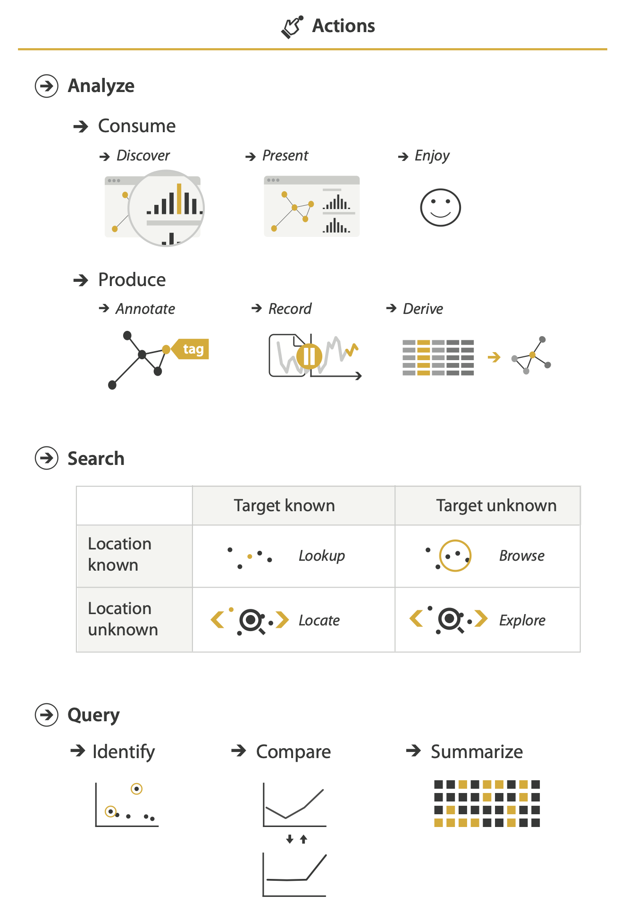
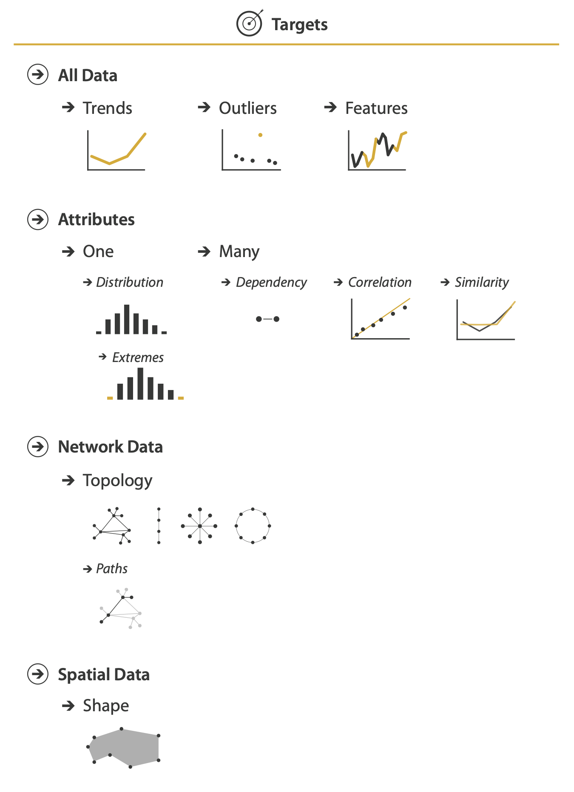
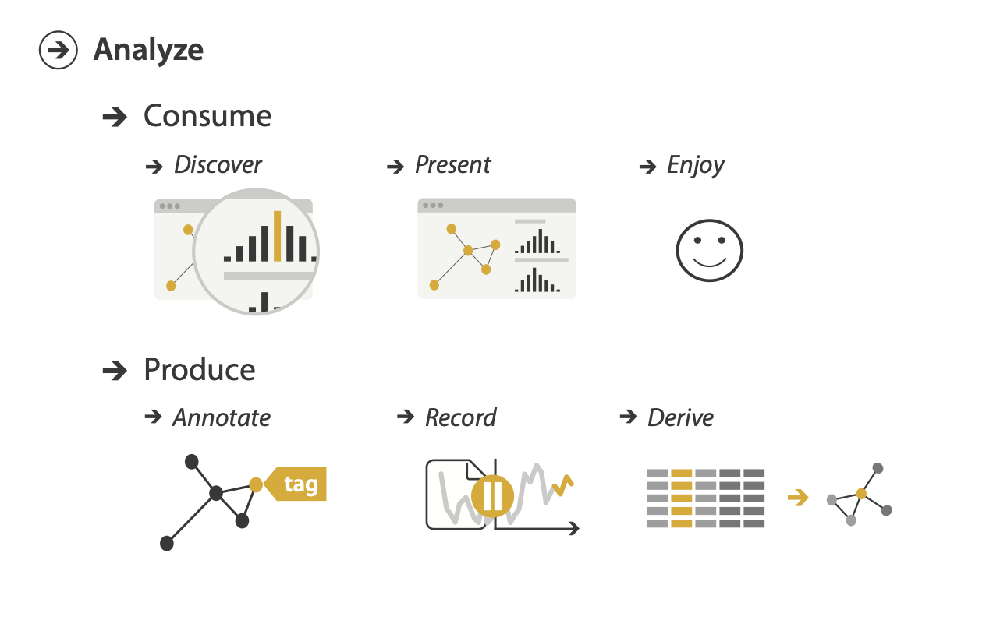
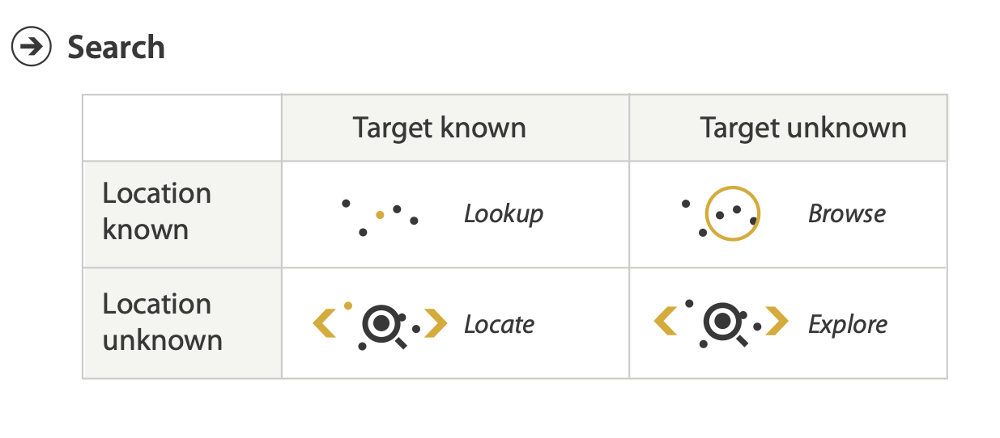
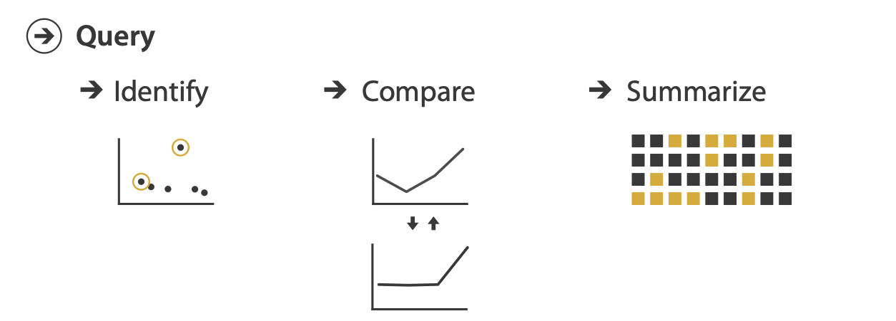
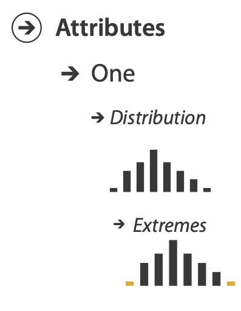
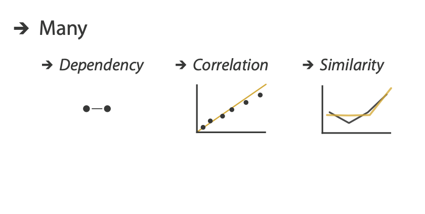
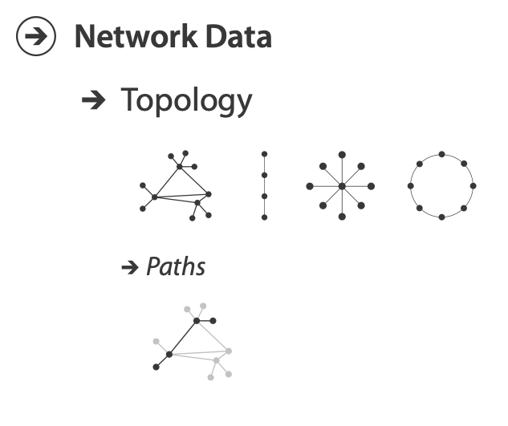
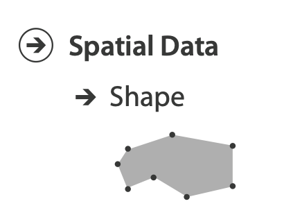
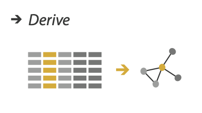

Why: abstracting the tasks
MIDS W209: Information Visualization
John Alexis Guerra Gómez | john.guerra[at]gmail.com | @duto_guerra
https://johnguerra.co/lectures/MIDS_W209_Information_Visualization/03_Why/
https://johnguerra.co/lectures/MIDS_W209_Information_Visualization/03_Why/

Partially based on slides from Tamara Munzner
What we are going to learn
- Abstracting the tasks (Why)
- Define the verb of the task (Action)
- Define the noun of the task (Targets)
- Tasks good practices
- Deriving new data
Abstracting the tasks (Why)
Why analyze tasks
- Abstract tasks are domain independent
- 2 different domain problems 👉 same task abstraction 👉 same solution
- Visualization idioms are good for some tasks and bad for others
Task construction
Action (verb)

+
Target (noun)

Actions
verbs
Actions levels
Three levels:
- Analyze
- Search
- Query
Try being specific
Actons: Analize, High-level
- Consume
- Discover vs Present
- Enjoy
- Produce
- Annotate, Record
- Derive

Actions: Search, Mid-level

- Target
- I know what I'm looking for
- e.g. What's the salary of the CEO. 👆 Target known
- e.g. Who has the highest the salary. 👆 Target unknown
Actions: Search, Mid-level
- Location
- I know where the mark is going to be located in the chart
- Scales alphabetically ordered
Actions: Query, Low-level
How much of the data matters?
- One 👉 identify
- Some 👉 compare
- All 👉 summarize

Targets: Trends, outliers, features
- Trends (or patterns) e.g. Are sales increasing?
- Outliers one or some that aren't like the others.
- Features 👉 task dependent e.g. a v-shaped recession.
One Attribute: Distributions, Extremes

- Distribution e.g. GDP distribution across multiple countries
- Extremes e.g. Country with highest GDP
Many Attributes: Dependency, Correlation, Similarity
- Dependency e.g. Do all NBA players attended college?
- Correlation e.g. Do higher paying players score more?
- Similarity e.g. Do Curry and Hardem shoot the same?

Networks: Topology + Shape
- Topology e.g. Do all my classmates follow each other?
- Paths e.g. Who do I know on LinkedIN that knows Bill Gates?

Targets: Spatial data

- Shape e.g. Is there a park within 100ft of every school?
Good practices
- Be specific
- Is your task measurable?
- Number your tasks
- Use Tamara's grammar
- Describe specific attributes used
- Don't think about the visuals
- T1 Summarize the stock market prices for the SP/500 companies (Summarize, Distribution)
- T2 Identify the most profitable books for the last year (Identify, Features)
- T3 Compare the trends of COVID19 deaths in the world (Compare, Trend)
Deriving new data
Don't make the user compute it in their head
Instead display the difference
When to derive data?
- Large data? 👉 aggregate
- Complex data? 👉 simplify
- Dimensionality Reduction
- Network/Tree Analytics (clusters, centralities)
- Don't make the user think!

What we learned
- Abstracting the tasks (Why)
- Define the verb of the task (Action)
- Define the noun of the task (Targets)
- Tasks good practices
- Deriving new data